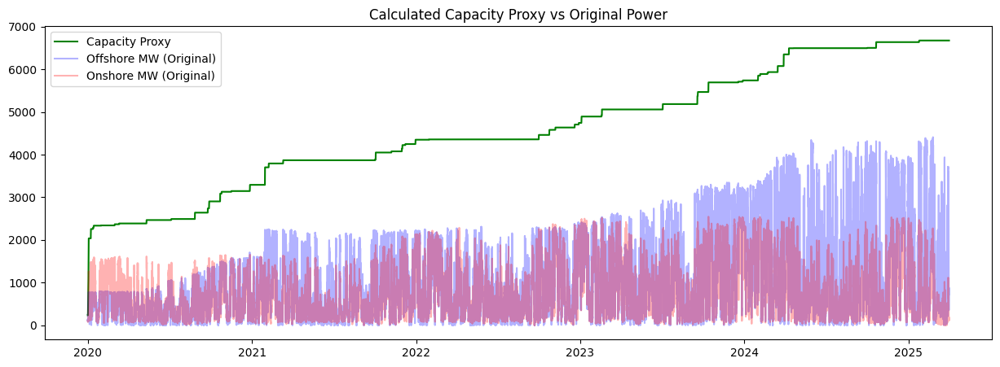
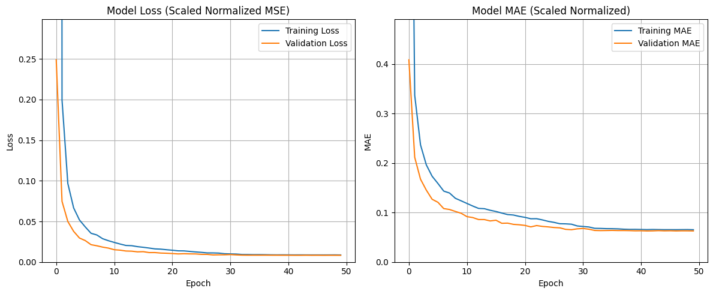
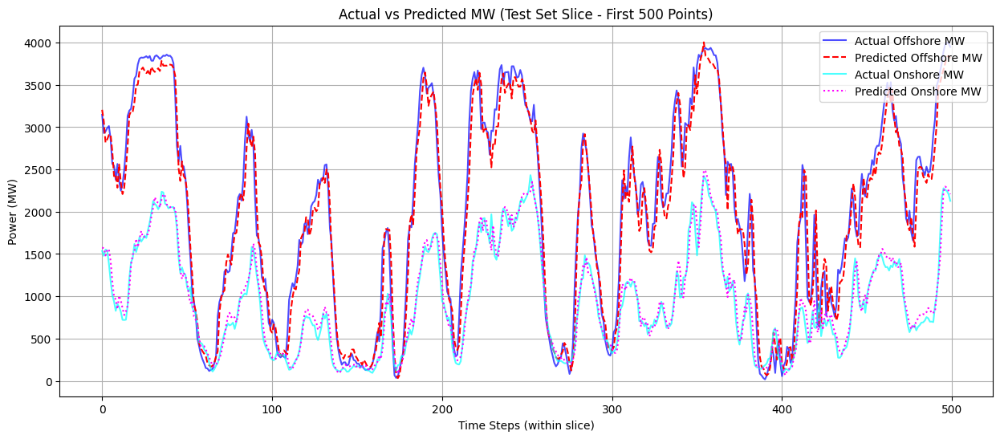
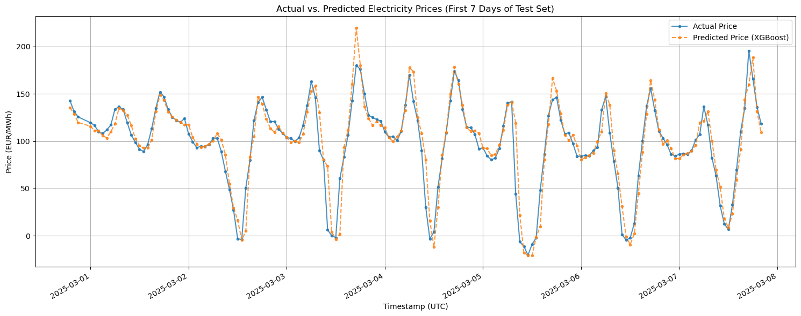

Tempestas is a comprehensive two-stage machine learning system designed to predict hourly wind energy production (both offshore and onshore) and subsequent wholesale electricity prices in the Netherlands. It leverages meteorological data, historical energy generation records, and electricity market pricing to provide accurate forecasts.
System Architecture
The system operates in two distinct stages, where the output of the first stage directly feeds into the second:
Stage 1: Wind Power Prediction
The first stage uses a Temporal Convolutional Network (TCN) to forecast hourly wind energy generation. TCNs are particularly well-suited for this task due to their ability to capture long-range temporal dependencies using dilated convolutions while maintaining causality and processing sequences efficiently in parallel.
Input Features
- Wind speed at 100m and 10m heights (m/s)
- Wind direction at 100m and 10m heights (degrees)
- Wind gusts at 10m (m/s)
- Surface pressure (hPa), temperature, humidity
- Cloud cover (low, mid, high levels)
- Rainfall, temporal features (cyclical encodings)
- Lagged energy production values
TCN Architecture
- Input sequence length: 12 hours
- 21 input features across 23 wind turbine clusters
- TCN Layer: 16 filters, kernel size 9, dilations [1, 2, 4, 8, 16]
- 4 stacked residual blocks with skip connections
- Dropout rate: 0.3 for regularization
- Adam optimizer with learning rate 0.001
Capacity Normalization
A key challenge in predicting wind power over the 2017-2025 period is the significant growth in installed wind capacity in the Netherlands. To address this, a rolling capacity proxy was calculated using a 365-day rolling maximum of total wind power. This allows the model to predict the proportion of capacity utilized rather than raw MW, making predictions robust to capacity changes.
Calculated capacity proxy (green) vs original offshore (blue) and onshore (red) generation
Training Performance
The TCN model was trained on data from 2020-2025 using a chronological train/validation split. The training curves show stable convergence without overfitting:
Training and validation loss (Scaled Normalized MSE) and MAE over epochs
Model Performance
| Metric | TCN Model | Persistence (1H) | Persistence (24H) | Simple Average |
|---|---|---|---|---|
| MAE (MW) | 110.86 | 112.54 | 842.01 | 836.85 |
| RMSE (MW) | 164.82 | 177.38 | 1186.74 | 1137.85 |
The TCN significantly outperforms baseline models, achieving lower MAE and RMSE than even the 1-hour persistence baseline.
Actual vs predicted wind power output for the test set
Stage 2: Electricity Price Prediction
The second stage uses an XGBoost regressor to predict hourly wholesale electricity prices (€/MWh). XGBoost was chosen for its robustness with tabular data, ability to handle non-linear relationships, and effective feature interaction modeling.
Input Features
- Predicted offshore and onshore wind power (from Stage 1)
- Temporal features (hour, day, month with cyclical encoding)
- Lagged electricity price values (1h, 24h, etc.)
XGBoost Configuration
- Maximum estimators: 1000 (with early stopping)
- Learning rate: 0.017
- Maximum depth: 7
- Subsample: 0.7
- Regularization: L1 (α=0.17) and L2 (λ=3.76×10⁻⁶)
Feature Importance
Analysis of the trained model revealed the most influential features for Dutch electricity price prediction:
- Predicted Offshore Wind Energy (from Stage 1)
- Price lag 1 hour
- Hour of the day (cyclical)
- Predicted Onshore Wind Energy (from Stage 1)
- Day of the year (cyclical)
The prominence of predicted wind power features validates the two-stage architecture: accurate wind forecasts from Stage 1 are critical inputs for price prediction.
Predicted vs actual wholesale electricity prices on the test set
Data Sources
The system utilizes data from several publicly available sources:
Weather Data
Hourly data from 2017-2025 for 23 wind turbine clusters (9 offshore, 14 onshore) across the Netherlands, sourced via the Open-Meteo Historical Weather API.
Energy Production Data
Hourly offshore/onshore wind production (MW) from NED.NL and the ENTSO-E Transparency Platform.
Electricity Price Data
Hourly wholesale prices (€/MWh) from the Ember Energy Data Repository.
Data Processing Pipeline
Raw data undergoes several processing steps before model training:
- Time Zone Alignment: All timestamps converted to UTC
- Cyclical Encoding: Temporal features (hour, day, month) encoded using sine/cosine transformations
- Missing Value Handling: Linear interpolation for time series gaps
- Feature Aggregation: Weather data combined across clusters (offshore/onshore)
- Capacity Normalization: Rolling maximum proxy for capacity changes
- Robust Scaling: Input features scaled for model training
Future Directions
- Solar Integration: Add solar production data for comprehensive renewable forecasting
- Cross-Border Markets: Extend to neighboring electricity markets with flow data
- Advanced Features: Grid congestion, reserve margins, demand forecasts
- Model Exploration: Transformers for time series, ensemble methods
- Real-time Deployment: Near real-time data ingestion and prediction pipeline